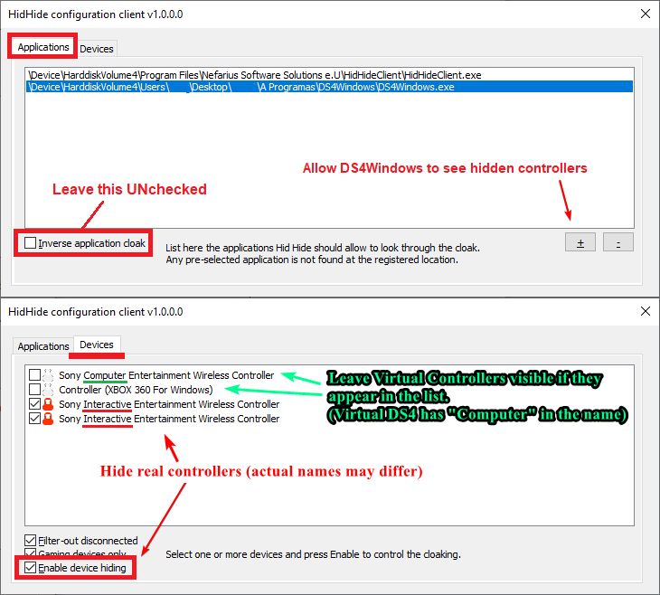
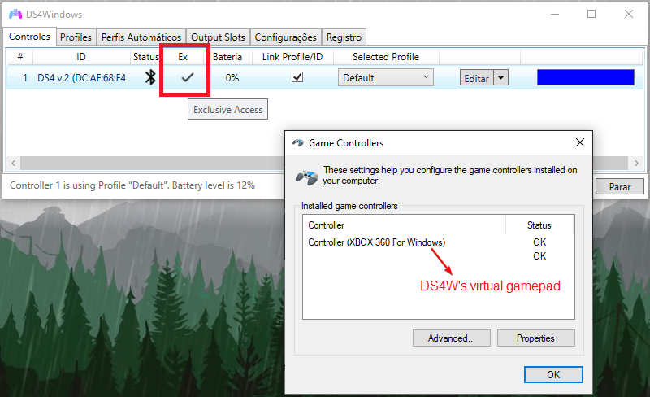

Preventing the double controller / double input issue in games
About the double input (controller) issue
DS4Windows does not magically transform your gamepad from one type to another. It creates a virtual gamepad that is associated to your real one. This means that if you have 1 real gamepad connected then windows will actually detect 2 gamepads. If 2 real then 4 and so on.
The image below shows how Windows behaves when a DS4v2 (Wireless Controller) is connected to the system while DS4Windows is emulating a Xbox gamepad:

If the game detects both the real and the virtual gamepad at the same time then it will receive commands from 2 different devices at every button press and stick movement, which can lead to the infamous double-input issue that can make games unplayable.
Alternatively, the game may end-up ignoring the virtual controller because it has picked the real controller first. When this happens, it may also be unable to read its commands, which can create a dead-lock state where nothing happens.
To prevent or fix those issues it's necessary to make only DS4Windows' virtual controller be visible to games by hiding the real controller. This can be done in two ways:
- HidHide (recommended)
- DS4Windows'
Hide DS4 Controllersoption (legacy, non-recommended option)
Methods to prevent it
HidHide (recommended)
Important
- After installing the HidHide driver you MUST reboot your system before using it
- If HidHide is properly configured then the
Hide DS4 controllersoption under DS4Windows'Settingstab is redundant and should be left disabled
HidHide is a driver that acts as a barrier between Windows and every HID Device connected (physical peripherals). It allows the user to selectively hide gamepads and only allow specific software to see them. This is the recommended method because once it has been properly setup the double input issue is solved for good.
In DS4W case, the user needs to set HidHide to:
- Hide the real gamepads from the system, once when connected via USB and once when via Bluetooth
- Allow DS4Windows to see all hidden devices, otherwise it would think there are no supported gamepads connected


HidHide has its own dedicated setup page. Users who know more or less what they are doing can follow the quick setup section and for the ones having trouble there is also the step-by-step section.
Hide DS4 Controllers option (legacy. Not recommended)
Though it is written "DS4 Controllers" it applies to any real controller detected by DS4Windows
Note to users of HidHide
If you have HidHide installed and correctly setup it's recommended to leave this option disabled except in some really specific games
This option exists on DS4Windows' Settings tab. When enabled, DS4Windows will kindly ask Windows for exclusive access to detected devices, meaning the later would only allow DS4Windows to detect the gamepads and preventing the double input issue.

The problem with this method is that Windows can deny the exclusive access request when another process already has a open connection to the gamepad. Common reasons for this request to fail are:
- A game already is running
- Google chrome/Opera is running (why does it have a connection to the gamepad you ask? A mystery)
- Nvidia Geforce experience process having a hold of the gamepad
- Random non-obvious process having a hold of the gamepad
- etc
Even if it works initially, if your gamepad disconnects in the middle of a game chances are that you'll lose exclusive access upon reconnection, requiring you to close the game to try again.
For the reasons explained above, the Hide DS4 Controllers option is NOT RECOMMENDED, though it remains available to users that need to use it for whatever reason. HidHide is the better option all around for those who can use it.
Dedicated troubleshooting page
In case you really need to use this option, there is a dedicated troubleshooting article on it to verify why windows is failing to grant exclusive access to the controller